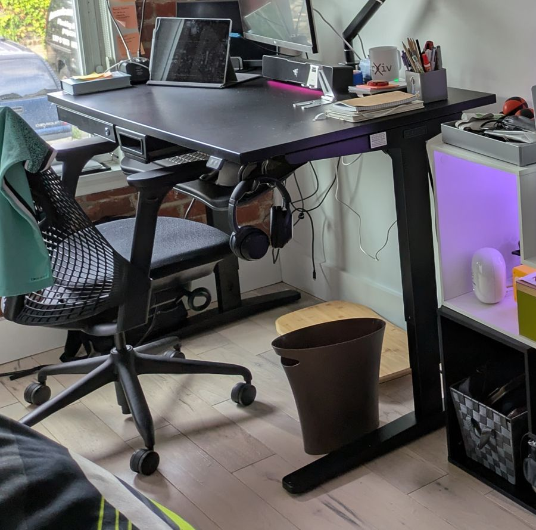

Office & home gym
Black and white furniture, with all the colour coming from Philips Hue lights and cyberpunk art. A gym corner on black tatami in the same room.

Black desk and Sayl chair · coming from New York
Neon posters · coming from New York
Black & white
furniture.
Colour from light.
furniture.
Colour from light.
Black #111111
White #F4F4F2
Hue pink #FF2D95
Hue violet #7A3CFF
Hue blue #2F7BFF
MaterialsBlack steel and mesh · black desk · white drawers · Philips Hue gradient strips · black tatami over a rubber layer · cyberpunk posters
Living room
Wall of books in walnut, black speakers and steel, low taupe rug, a reading chair. Calm base, strong objects.

Elisabeth bookcase, Pacini & Cappellini · my pick

Elisabeth in a room
 To confirm
To confirmKandy armchair
Walnut #6B4A35
Mango wood #B9854F
Light oak #D2B48C
Taupe rug #8D8378
Black #1C1C1E
MaterialsWalnut canaletto veneer · mango wood · black steel frames · low-pile wool-look rug · framed prints with white mats
Dining room
Placeholder direction: solid wood in the same walnut family as the bookcase, light legs, upholstered chairs. Open to Angela's ideas.
 To confirm
To confirmHope table, Pacini & Cappellini
 To confirm
To confirmThelma chair at the table
 To confirm
To confirmThelma chair
Walnut #6B4A35
Warm brown #A8794A
Black #1C1C1E
Cream #F3ECE2
Wood table,
soft seats,
good light.
soft seats,
good light.
Bedroom
Placeholder direction: the quietest room. Soft fabric, natural wood feet, sand and cream with one dark note.
 To confirm
To confirmNuvola bed, Pacini & Cappellini
 To confirm
To confirmBed with wardrobe in view
 To confirm
To confirmSolid wood foot detail
Sand #CDBFAE
Cream #F3ECE2
Natural wood #B79068
Dark velvet #2B2724
MaterialsQuilted fabric headboard · solid wood feet · linen or cotton bedding · warm, low lighting